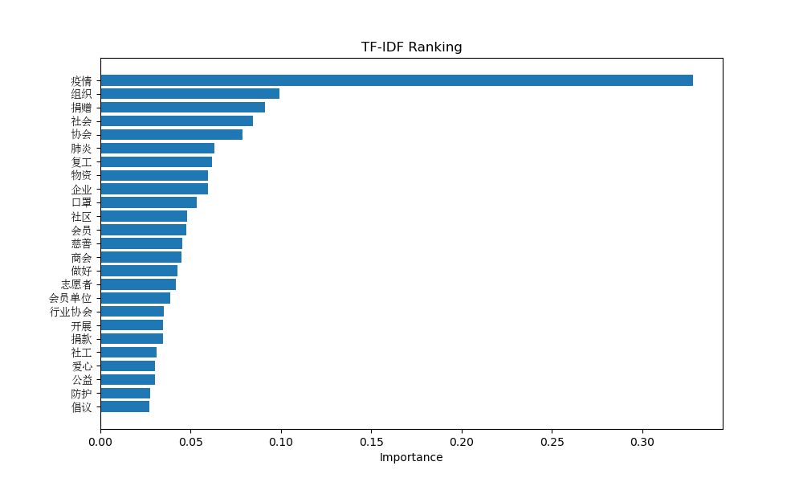
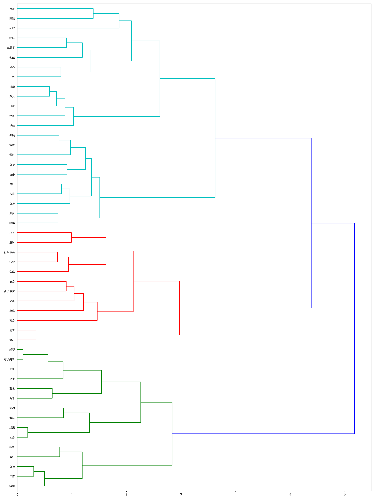

我们通过爬虫技术，对中国社会组织公共服务平台疫情防控专区新闻进行了抓取，共计获得了 1-26 至 5-19 时间段内共1400+新闻；
词云图，也叫文字云，是对文本中出现频率较高的“关键词”予以视觉化的展现，词云图过滤掉大量的低频低质的文本信息，使得浏览者只要一眼扫过文本就可领略文本的主旨。
对该平台上发布的所有文章使用jieba进行分词、获取主题词（取排名前00位），并渲染词云图：
可以看到，“疫情”、“防控”、“组织”、“工作”等词语较为突出，这也和平台的主旨相吻合；
对不同日期的文章集合分别渲染词云图，可以直观地看出新闻主题随着时间的变化；
可通过拖动滑块改变日期范围，每个日期范围内有约100篇新闻；
TF-IDF（Term Frequency-InversDocument Frequency）是一种常用于信息处理和数据挖掘的加权技术。该技术采用一种统计方法，根据字词的在文本中出现的次数和在整个语料中出现的文档频率来计算一个字词在整个语料中的重要程度。它的优点是能过滤掉一些常见的却无关紧要本的词语，同时保留影响整个文本的重要字词。
TF - IDF = TF * IDF
TF（Term Frequency）表示某个关键词在整篇文章中出现的频率。IDF（InversDocument Frequency）表示计算倒文本频率。文本频率是指某个关键词在整个语料所有文章中出现的次数。倒文档频率又称为逆文档频率，它是文档频率的倒数，主要用于降低所有文档中一些常见却对文档影响不大的词语的作用。
输出结果如下图所示，可以看到“疫情”、“组织”、“捐赠”、“社会”、“协会”、“肺炎”、“物资”等都是高频词，也是大众普 遍关心的主题。
对主题词进行层次聚类分析，层次聚类法的基本过程如下：
层次聚类不指定具体的簇数，而只关注簇之间的远近，最终会形成一个树形图，可以表明相应关键词间的联系：
可以明显地观察到，主题词可以分为三类，大致对应于三个主题板块：
对微博数据采用snowNLP进行情感分析得出的情感数值，范围为-0.5 ~ 0.5，大于0为正面情感，小于0为负面情感；
绘制每日平均情感数值曲线图：
总体而言，疫情相关的微博情感倾向还是偏正面或中性；在1.19前，情感平均值较高，约为0.2；在1.19，疫情开始在全国扩散开来并且钟南山宣布人传人之后，情感平均值下降到了0，1附近；在2.18、2.19时，可能由于疫情国内接近拐点，情感分析数值又有显著提高；